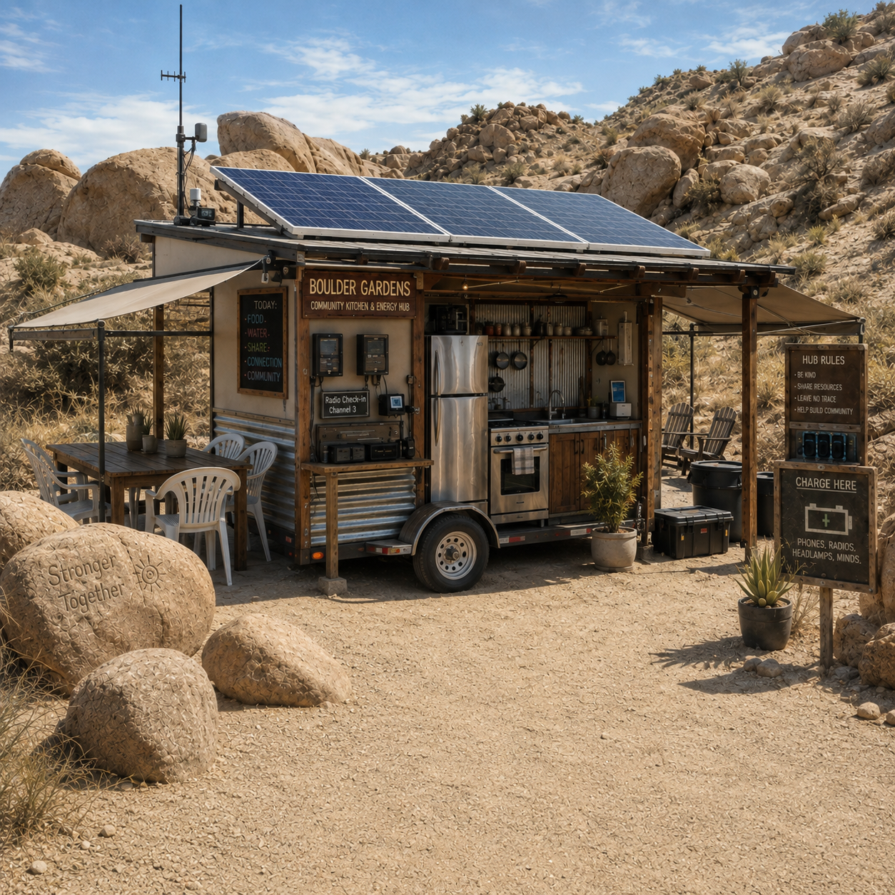
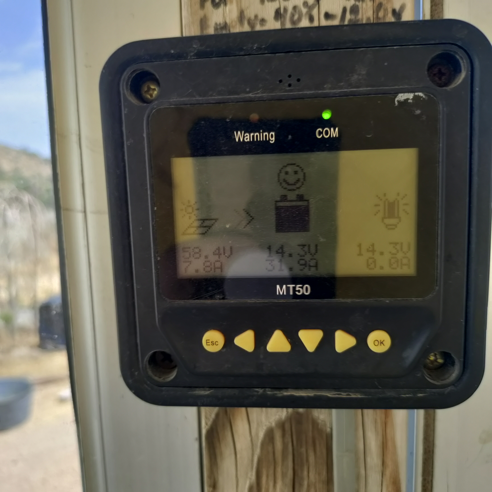
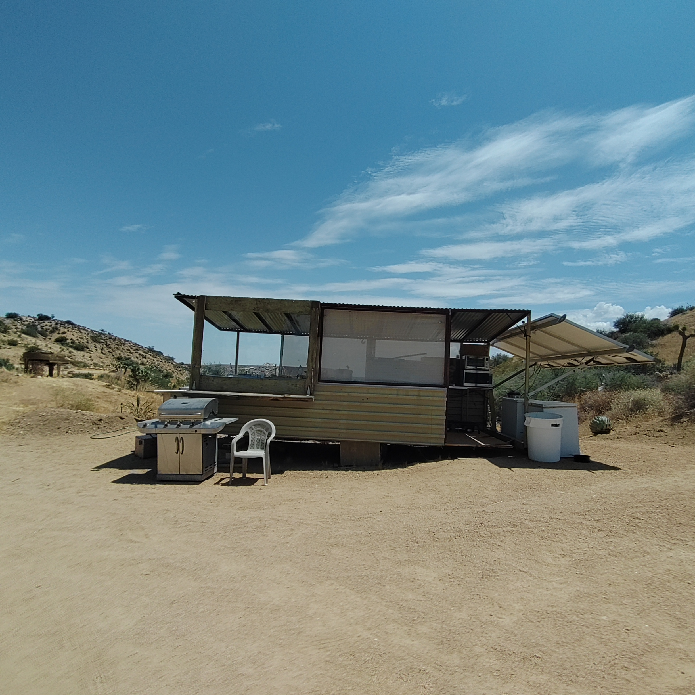
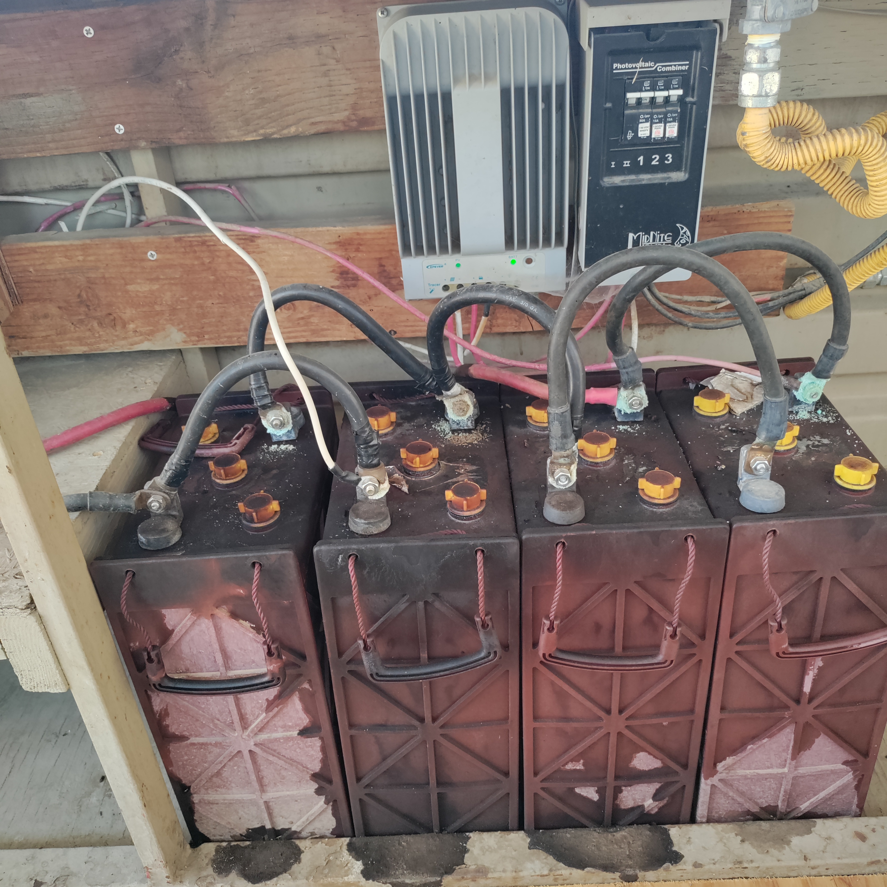
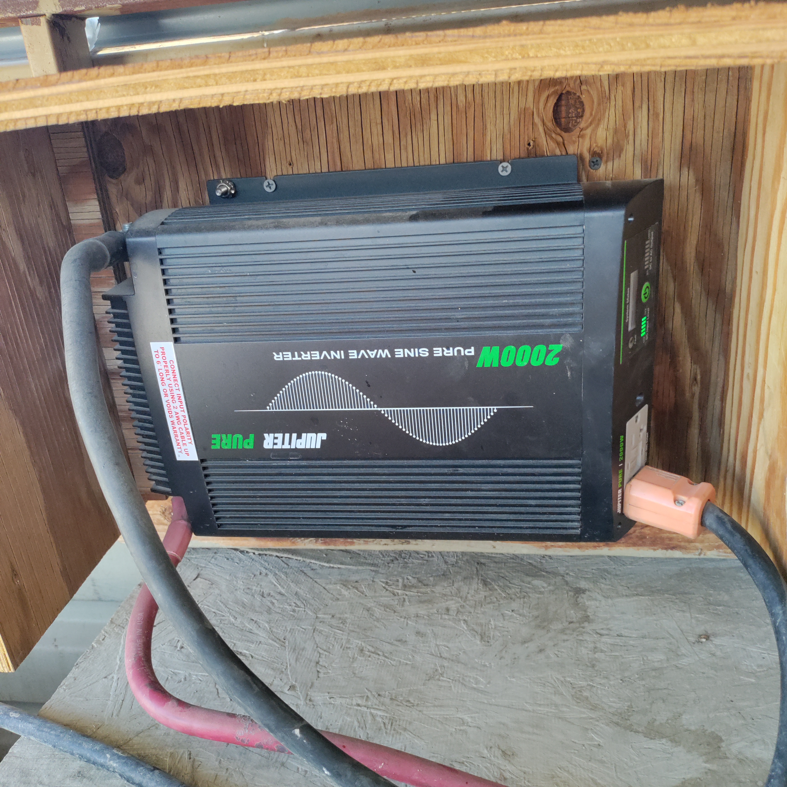
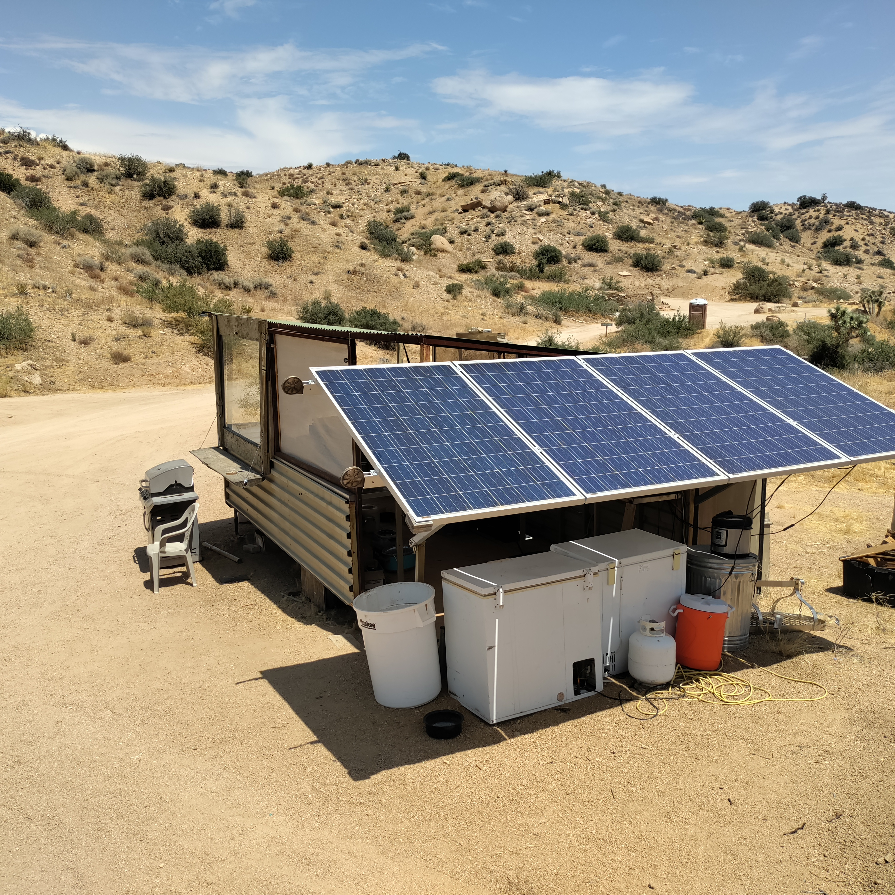

Field Report 007 · Projects
Mobile Kitchen
This Project is our mobile kitchen system.

Presently our mobile kitchen system has four solar panels, six lead-acid batteries, and a 2,000-watt inverter. We want to upgrade it so it can handle things like hot water kettles, microwaves, and other kitchen appliances. It is also a charging hub for guests who need to recharge their phones. Once it is fully finished, we want shade coming from the sides, the solar panels on the roof, and a radio station so people can communicate on their handheld radios. We are documenting what the system is now, and later we will determine what it should become.
Photographic Record
The work, seen in place
Selected photographs from the private FieldStation source record.





System Thread
Related Fieldstation records
Public synopsis derived from Boulder Gardens Fieldstation Workbook source record FR007. Detailed equipment records, calculations, unresolved questions, and corrections remain in the workbook.